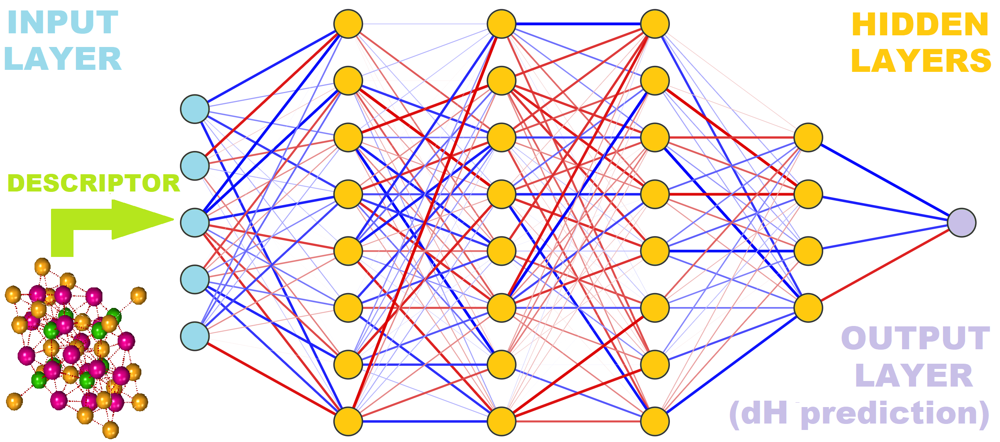
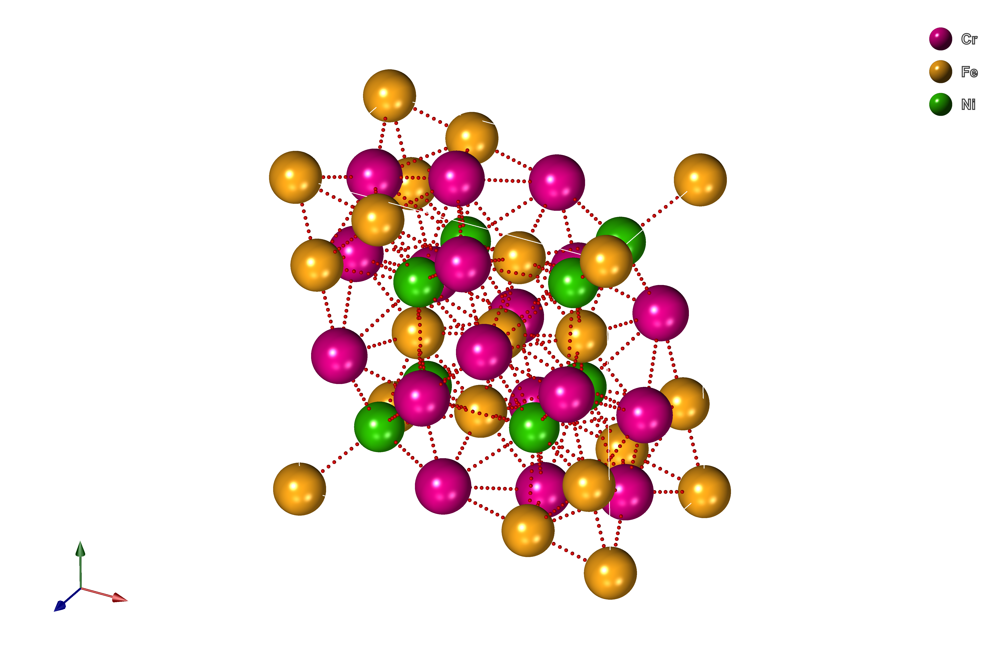
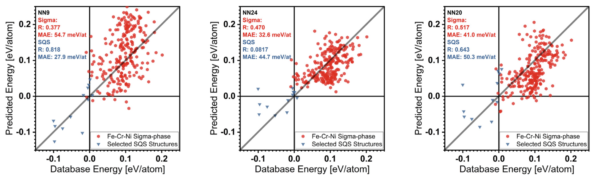

pySIPFENN MGF-PSU Workshop (Feb 2023)
This Jupyter notebook is a brief walkthrough covering core functionalities of the pySIPFENN or py(Structure-Informed Prediction of Formation Energy using Neural Networks) package; available through the PyPI repository. For a full up-to-date documentation, please refer to the pySIPFENN GitHub repository or the pySIPFENN documentation. You can also find news about our projects using SIPFENN at our Phases Research Lab group website.

Install pySIPFENN
Installing pySIPFENN is simple and easy utilizing either PyPI package repository or cloning from GitHub. While not required, it is recommended to first set up a virtual environment using venv or Conda. This ensures that one of the required versions of Python (3.9+) is used and there are no dependency conflicts. If you have Conda installed on your system ( see miniconda instructions ), you can create a new environment with:
conda create -n pysipfenn-workshop python=3.9 jupyter
conda activate pysipfenn-workshop
And then simply install pySIPFENN from PyPI with
pip install pysipfenn
!pip install pysipfenn
Alternatively, you can also install pySIPFENN in editable mode if you cloned it from GitHub like
git clone https://github.com/PhasesResearchLab/pySIPFENN.git
Or by downloading a ZIP file. Please note, this will by default download the latest development version of the
software, which may not be stable. For a stable version, you can specify a version tag after the URL with
--branch <tag_name> --single-branch.
Then, move to the pySIPFENN folder and install in editable (-e) mode
cd pySIPFENN
pip install -e .
Starting pySIPFENN
To utilize pySIPFENN for straightforward calculations, only the Calculator class is needed. It allows for both fetching and identification of NN models and later running of them.
import pysipfenn
from pysipfenn import Calculator # The only thing needed for calculations
For pretty printing we also import pretty print Python built-in library. For convenience, we also import defaultdict from collections.
from pprint import pprint # pretty printing
from collections import defaultdict # convenience in the example
Now initialize the Calculator. When run, this should display all models detected (e.g. ✔ SIPFENN_Krajewski2020 Standard Materials Model) and those not detected, but declared in the modelsSIPFENN/models.json file.
c = Calculator()
✔ SIPFENN_Krajewski2020 Standard Materials Model
✔ SIPFENN_Krajewski2020 Novel Materials Model
✔ SIPFENN_Krajewski2020 Light Model
✔ SIPFENN_Krajewski2022 KS2022 Novel Materials Model
Loading models:
100%|██████████| 4/4 [00:08<00:00, 2.20s/it]
********* PySIPFENN Successfully Initialized **********
In this workshop, all models were made avaialble from the start, but on your machine, if this is the first run of pySIPFENN, no models will be available. However, one can easily fetch four default (as of Feb 2023) models from Zenodo with a simple:
#c.downloadModels()
#c.loadModels()
For the purpose of testing, a single model is sufficient and will be fetched faster. E.g. the lightweight model (‘SIPFENN_Krajewski2020_NN24’) can be acquired in about 1/30 of the time required to download all four.
#c.downloadModels(network='SIPFENN_Krajewski2020_NN24')
#c.loadModels()
In a typical scenario, everything would work smoothly, but in some cases you may not be allowed to write into pySIPFENN package directory. Last part of this workshop will cover how to work around this limitation.
Simple run from directory
The simplest and most common usage of pySIPFENN is to deploy it on a directory/folder containing atomic structure files such as POSCAR or CIF. To of so, one simply specifies its location and which descriptor / feature vector should be used. The latter determines which ML models will be run, as they require a list of specific and ordered features as input. Furthermore, while the exact model can be specified by the user, by default all applicable models are run, as the run itself is 1-3 orders of magnitude faster than descriptor calculation.
c.runFromDirectory(directory='myInputFiles', descriptor='KS2022')
In this demonstration, a set of test files shipped with pySIPFENN under directory
#testFilesDir = "pysipfenn/tests/testCaseFiles/exampleInputFiles/"
is used. If you are using pySIPFENN in editable mode, you can simply use the above code to specify the directory. If you are using pySIPFENN from PyPI, you can use the following code to import test structures from the package.
from importlib import resources
testFilesDir = resources.files('pysipfenn').joinpath('tests/testCaseFiles/exampleInputFiles/')
However, feel free to change the directory to something with your structure files. Please note that the file extension (e.g. .POSCAR) is required for correct import and different types (POSCAR and CIF) can be mixed. Assuming you are in the workshop directory and you put something in the myInputFiles you can run the following
#testFilesDir = 'myInputFiles'
Furthermore, you can specify whether pySIPFENN should run in series or parallel calculation mode. The parallel mode is generally faster, but uses more system resources and may be slower on low-power machines with not enough CPU cores. Serial mode is also preferred if there are less than 5 calculations/worker due to multiprocessing overheads.
c.runFromDirectory(directory=testFilesDir,
descriptor='KS2022',
mode='serial');
Importing structures...
100%|██████████| 32/32 [00:00<00:00, 528.58it/s]
Models that will be run: ['SIPFENN_Krajewski2022_NN30']
Calculating descriptors...
100%|██████████| 32/32 [00:03<00:00, 8.25it/s]
Done!
Making predictions...
Prediction rate: 560.1 pred/s
Obtained 32 predictions from: SIPFENN_Krajewski2022_NN30
Done!
Now, all results are obtained and stored within the c Calculator object inside a few exposed conveniently named variables predictions and inputFiles. Also, the descriptor data is retained in descriptorData if needed. Let’s look up the first 3 entries. Note that the unit of prediction will depend on the model used; in this case, it is eV/atom.
pprint(c.inputFiles[:3])
pprint(c.predictions[:3])
['0-Cr8Fe18Ni4.POSCAR', '1-Cr16Fe8Ni6.POSCAR', '2-Fe8Ni22.POSCAR']
[[0.17857100069522858], [0.22403092682361603], [0.07981809228658676]]
For user convenience, a few methods are provided for extracting the results. E.g., if pySIPFENN has been run from structure files, the get_resultDictsWithNames() method is available to conveniently pass results forward in the code.
c.get_resultDictsWithNames()[:3]
[{'name': '0-Cr8Fe18Ni4.POSCAR',
'SIPFENN_Krajewski2022_NN30': 0.17857100069522858},
{'name': '1-Cr16Fe8Ni6.POSCAR',
'SIPFENN_Krajewski2022_NN30': 0.22403092682361603},
{'name': '2-Fe8Ni22.POSCAR',
'SIPFENN_Krajewski2022_NN30': 0.07981809228658676}]
Alternatively, if results are to be preserved in a spreadsheet, they can be exported into a CSV.
c.writeResultsToCSV('myFirstResults_pySIPFENN.csv')
Sigma-Phase 5-sublattice model
In the previous example we went over a set of POSCAR files in a directory without performing any non-automated manipulation. This is what authors expect will be the most common use pattern. However, pySIPFENN can be effortlessly combined with other structure analysis and manipulation software to fulfill more advanced needs. Here, as an example, we will play with a fairly complex topologically close packed (TCP) phase called Sigma possesing 5 chemically unique sites, which will be automatically identified from one configuration, like the one in figure below. Then we will look at energetics of all possible occupancies by 3 elements.

For structure manipulation we will utilize pymatgen Structure. The Spglib library, accessed through pymatgen, will perform the symmetry analysis. We begin with import of appropriate modules.
from pymatgen.core import Structure
from pymatgen.analysis.structure_analyzer import SpacegroupAnalyzer
Next, we take any end-member of the atomic structure in question. Conveniently, one of them is already in the test case files. Then we replace all species in it with dummy ones.
endMemberPath = resources.files('pysipfenn').joinpath('tests/testCaseFiles/exampleInputFiles/0-Cr8Fe18Ni4.POSCAR')
baseStructure = Structure.from_file(endMemberPath)
for el in set(baseStructure.species):
baseStructure.replace_species({el: 'dummy'})
print(baseStructure)
Full Formula (Dummy30)
Reduced Formula: Dummy
abc : 8.547048 8.547048 4.477714
angles: 90.000000 90.000000 90.000000
pbc : True True True
Sites (30)
# SP a b c
--- ------- -------- -------- --------
0 Dummy0+ 0.737702 0.063709 0
1 Dummy0+ 0.262298 0.936291 0
2 Dummy0+ 0.436291 0.237702 0.5
3 Dummy0+ 0.762298 0.563709 0.5
4 Dummy0+ 0.563709 0.762298 0.5
5 Dummy0+ 0.237702 0.436291 0.5
6 Dummy0+ 0.063709 0.737702 0
7 Dummy0+ 0.936291 0.262298 0
8 Dummy0+ 0 0 0
9 Dummy0+ 0.5 0.5 0.5
10 Dummy0+ 0.463029 0.129472 0
11 Dummy0+ 0.536971 0.870528 0
12 Dummy0+ 0.370528 0.963029 0.5
13 Dummy0+ 0.036971 0.629472 0.5
14 Dummy0+ 0.629472 0.036971 0.5
15 Dummy0+ 0.963029 0.370528 0.5
16 Dummy0+ 0.129472 0.463029 0
17 Dummy0+ 0.870528 0.536971 0
18 Dummy0+ 0.182718 0.182718 0.251726
19 Dummy0+ 0.817282 0.817282 0.748274
20 Dummy0+ 0.817282 0.817282 0.251726
21 Dummy0+ 0.317282 0.682718 0.751726
22 Dummy0+ 0.317282 0.682718 0.248274
23 Dummy0+ 0.182718 0.182718 0.748274
24 Dummy0+ 0.682718 0.317282 0.248274
25 Dummy0+ 0.682718 0.317282 0.751726
26 Dummy0+ 0.39991 0.39991 0
27 Dummy0+ 0.60009 0.60009 0
28 Dummy0+ 0.10009 0.89991 0.5
29 Dummy0+ 0.89991 0.10009 0.5
Then we use Spglib to find and group unique chemical sites in the structure and lists of their equivalents. In the case of Sigma-phase, there are 5 such sites, also called sublattices.
spgA = SpacegroupAnalyzer(baseStructure)
eqAtoms = spgA.get_symmetry_dataset()['equivalent_atoms']
uniqueDict = defaultdict(list)
for site, unique in enumerate(eqAtoms):
uniqueDict[unique] += [site]
pprint(uniqueDict)
defaultdict(<class 'list'>,
{0: [0, 1, 2, 3, 4, 5, 6, 7],
8: [8, 9],
10: [10, 11, 12, 13, 14, 15, 16, 17],
18: [18, 19, 20, 21, 22, 23, 24, 25],
26: [26, 27, 28, 29]})
Now, with unique sites identified, we need to find all possible occupancies in the chemical system in question. Here we look at the Cr-Fe-Ni ternary. We expect 3^5=243 possible permutations with repetition.
from itertools import product
allPermutations = list(product(['Fe', 'Cr', 'Ni'], repeat=5))
print(f'Obtained {len(allPermutations)} permutations of the sublattice occupancy\nE.g.: {allPermutations[32]}')
Obtained 243 permutations of the sublattice occupancy
E.g.: ('Fe', 'Cr', 'Fe', 'Cr', 'Ni')
structList = []
for permutation in allPermutations:
tempStructure = baseStructure.copy()
for unique, el in zip(uniqueDict, permutation):
for site in uniqueDict[unique]:
tempStructure.replace(site, el)
structList.append(tempStructure)
print(structList[32])
Full Formula (Cr10 Fe16 Ni4)
Reduced Formula: Cr5(Fe4Ni)2
abc : 8.547048 8.547048 4.477714
angles: 90.000000 90.000000 90.000000
pbc : True True True
Sites (30)
# SP a b c
--- ---- -------- -------- --------
0 Fe 0.737702 0.063709 0
1 Fe 0.262298 0.936291 0
2 Fe 0.436291 0.237702 0.5
3 Fe 0.762298 0.563709 0.5
4 Fe 0.563709 0.762298 0.5
5 Fe 0.237702 0.436291 0.5
6 Fe 0.063709 0.737702 0
7 Fe 0.936291 0.262298 0
8 Cr 0 0 0
9 Cr 0.5 0.5 0.5
10 Fe 0.463029 0.129472 0
11 Fe 0.536971 0.870528 0
12 Fe 0.370528 0.963029 0.5
13 Fe 0.036971 0.629472 0.5
14 Fe 0.629472 0.036971 0.5
15 Fe 0.963029 0.370528 0.5
16 Fe 0.129472 0.463029 0
17 Fe 0.870528 0.536971 0
18 Cr 0.182718 0.182718 0.251726
19 Cr 0.817282 0.817282 0.748274
20 Cr 0.817282 0.817282 0.251726
21 Cr 0.317282 0.682718 0.751726
22 Cr 0.317282 0.682718 0.248274
23 Cr 0.182718 0.182718 0.748274
24 Cr 0.682718 0.317282 0.248274
25 Cr 0.682718 0.317282 0.751726
26 Ni 0.39991 0.39991 0
27 Ni 0.60009 0.60009 0
28 Ni 0.10009 0.89991 0.5
29 Ni 0.89991 0.10009 0.5
c = Calculator()
✔ SIPFENN_Krajewski2020 Standard Materials Model
✔ SIPFENN_Krajewski2020 Novel Materials Model
✔ SIPFENN_Krajewski2020 Light Model
✔ SIPFENN_Krajewski2022 KS2022 Novel Materials Model
Loading models:
100%|██████████| 4/4 [00:08<00:00, 2.18s/it]
********* PySIPFENN Successfully Initialized **********
predictions1 = c.runModels(structList=structList, descriptor='KS2022', mode='parallel', max_workers=6)
pprint(predictions1[:3])
Models that will be run: ['SIPFENN_Krajewski2022_NN30']
Calculating descriptors...
Done!
Making predictions...
Prediction rate: 1580.7 pred/s
Obtained 243 predictions from: SIPFENN_Krajewski2022_NN30
[[0.17875529825687408], [0.16407020390033722], [0.204591765999794]]
results1 = c.get_resultDicts()
pprint(results1[:3])
[{'SIPFENN_Krajewski2022_NN30': 0.17875529825687408},
{'SIPFENN_Krajewski2022_NN30': 0.16407020390033722},
{'SIPFENN_Krajewski2022_NN30': 0.204591765999794}]
Run models utilizing different descriptor / feature vector
As alluded to before, pySIPFENN is built to enable rapid deployment of models based around single feature vector (or a subset of it) as descriptor calculation is by far the most costly component of structure-informed ML. However, the same feature vector cannot always be used and another one is required. There are generally three reasons for that:
The feature calculations are too slow / computationally expensive to be deployed on large scale (e.g. for 1,000,000 structures).
The descriptor does not include all the information needed to predict the property of interest well, or does not incorporate some dimension of the problem that is important for the prediction, e.g. the magnetic state or the volume.
We want to use a specific model that was trained on a different descriptor and retraining it is not feasible.
In this part of the tutorial, we combine previous predictions with a models based on a different descriptor (Ward2017) used in the original SIPFENN paper and run 3 models trained on it. Notably, the KS2022 we already calcualted is an optimized subset of it, giving similar performance at a fraction of the cost.
predictions2 = c.runModels(structList=structList, descriptor='Ward2017', mode='parallel', max_workers=6)
pprint(predictions2[:3])
Models that will be run: ['SIPFENN_Krajewski2020_NN9', 'SIPFENN_Krajewski2020_NN20', 'SIPFENN_Krajewski2020_NN24']
Calculating descriptors...
Done!
Making predictions...
Prediction rate: 750.1 pred/s
Obtained 243 predictions from: SIPFENN_Krajewski2020_NN9
Prediction rate: 738.6 pred/s
Obtained 243 predictions from: SIPFENN_Krajewski2020_NN20
Prediction rate: 4671.3 pred/s
Obtained 243 predictions from: SIPFENN_Krajewski2020_NN24
[[0.07845475524663925, 0.07977379858493805, 0.03619053587317467],
[0.06124945729970932, -0.011681255884468555, 0.05775585398077965],
[0.05984892696142197, 0.06342118978500366, 0.07474067807197571]]
results2 = c.get_resultDicts()
pprint(results2[:2])
[{'SIPFENN_Krajewski2020_NN20': 0.07977379858493805,
'SIPFENN_Krajewski2020_NN24': 0.03619053587317467,
'SIPFENN_Krajewski2020_NN9': 0.07845475524663925},
{'SIPFENN_Krajewski2020_NN20': -0.011681255884468555,
'SIPFENN_Krajewski2020_NN24': 0.05775585398077965,
'SIPFENN_Krajewski2020_NN9': 0.06124945729970932}]
And finally combine two list of result dictionaries together.
resultsCombined = [res1 | res2 for res1, res2 in zip(results1, results2)]
pprint(resultsCombined[:2])
[{'SIPFENN_Krajewski2020_NN20': 0.07977379858493805,
'SIPFENN_Krajewski2020_NN24': 0.03619053587317467,
'SIPFENN_Krajewski2020_NN9': 0.07845475524663925,
'SIPFENN_Krajewski2022_NN30': 0.17875529825687408},
{'SIPFENN_Krajewski2020_NN20': -0.011681255884468555,
'SIPFENN_Krajewski2020_NN24': 0.05775585398077965,
'SIPFENN_Krajewski2020_NN9': 0.06124945729970932,
'SIPFENN_Krajewski2022_NN30': 0.16407020390033722}]
resultsCombinedLabeled = [{'configuration': '-'.join(permutation)} | result for
result, permutation in zip(resultsCombined, allPermutations)]
pprint(resultsCombinedLabeled[31:33])
[{'SIPFENN_Krajewski2020_NN20': 0.10104316473007202,
'SIPFENN_Krajewski2020_NN24': 0.1215638816356659,
'SIPFENN_Krajewski2020_NN9': 0.1040281280875206,
'SIPFENN_Krajewski2022_NN30': 0.24544532597064972,
'configuration': 'Fe-Cr-Fe-Cr-Cr'},
{'SIPFENN_Krajewski2020_NN20': 0.07383379340171814,
'SIPFENN_Krajewski2020_NN24': 0.05895509943366051,
'SIPFENN_Krajewski2020_NN9': 0.06879016011953354,
'SIPFENN_Krajewski2022_NN30': 0.19040270149707794,
'configuration': 'Fe-Cr-Fe-Cr-Ni'}]
Lastly, we can compare our results with the DFT reference data from the original paper. This was done in the SIPFENN paper doi.org/10.1016/j.commatsci.2022.111254 for the 3 models based on Ward2017. The NN30 is not optimized and is not plotted here.

Add a new model!
Adding a new model that accepts one of the descriptors / feature vectors implemented in pySIPFENN is very easy! No matter if it is a re-trained model to fit a specific set of species, or entirely new architecture. It doesn’t even need to be created in PyTorch, as pySIPFENN imports ONNX format which can be the export target of almost all ML frameworks. For instance, models presented here were created in MxNet.
To add your model, you just need to put it in the modelsSIPFENN directory in the pySIPFENN location and add a brief definition to the models.json file, with field name matching model file name, descriptive name, and specify which descriptor has been used. E.g.,:
"SIPFENN_MyFunNet2023_NiSup": {
"name": "SIPFENN_Krajewski2022_NN30 re-optimized for Ni-superalloys",
"descriptor": "KS2022",
"note": "This is my new favorite model optimized for intermetallics in the Ni-based superalloys"
}
Then, you can just re-initialize the Calculator and everything should be loaded automatically!
#c = Calculator()
Alternatively, like in the case of this workshop or some HPCs, you may not have direct write access to the pySIPFENN installation. In that case, you can add a model in your user directory and load it manually. To show that, we now copy one of pySIPFENN models to our working directory and re-name it to our liking (‘SIPFENN_MyFunNet2023_NiSup’).
import shutil
with open(resources.files('pysipfenn').joinpath('modelsSIPFENN/SIPFENN_Krajewski2022_NN30.onnx'), 'rb') as modelForTest:
with open('SIPFENN_MyFunNet2023_NiSup.onnx', 'wb') as modelForTestCopy:
shutil.copyfileobj(modelForTest, modelForTestCopy)
And then load it manually.
c.loadModelCustom(networkName='SIPFENN_MyFunNet2023_NiSup',
modelName='SIPFENN_Krajewski2022_NN30 re-optimized for Ni-superalloys',
descriptor='KS2022',
modelDirectory='.')
Loaded model SIPFENN_Krajewski2022_NN30 re-optimized for Ni-superalloys (SIPFENN_MyFunNet2023_NiSup) from .
And then simply run everything as before.
predictions3 = c.runModels(structList=structList, descriptor='KS2022', mode='parallel', max_workers=6)
results3 = c.get_resultDicts()
pprint(results3[:2])
Models that will be run: ['SIPFENN_Krajewski2022_NN30', 'SIPFENN_MyFunNet2023_NiSup']
Calculating descriptors...
Done!
Making predictions...
Prediction rate: 1545.1 pred/s
Obtained 243 predictions from: SIPFENN_Krajewski2022_NN30
Prediction rate: 1660.2 pred/s
Obtained 243 predictions from: SIPFENN_MyFunNet2023_NiSup
[{'SIPFENN_Krajewski2022_NN30': 0.17875529825687408,
'SIPFENN_MyFunNet2023_NiSup': 0.17875529825687408},
{'SIPFENN_Krajewski2022_NN30': 0.16407020390033722,
'SIPFENN_MyFunNet2023_NiSup': 0.16407020390033722}]
Lastly, append our new results to the previous ones!
resultsFull = [res12 | res3 for res12, res3 in zip(resultsCombinedLabeled, results3)]
pprint(resultsFull[:2])
[{'SIPFENN_Krajewski2020_NN20': 0.07977379858493805,
'SIPFENN_Krajewski2020_NN24': 0.03619053587317467,
'SIPFENN_Krajewski2020_NN9': 0.07845475524663925,
'SIPFENN_Krajewski2022_NN30': 0.17875529825687408,
'SIPFENN_MyFunNet2023_NiSup': 0.17875529825687408,
'configuration': 'Fe-Fe-Fe-Fe-Fe'},
{'SIPFENN_Krajewski2020_NN20': -0.011681255884468555,
'SIPFENN_Krajewski2020_NN24': 0.05775585398077965,
'SIPFENN_Krajewski2020_NN9': 0.06124945729970932,
'SIPFENN_Krajewski2022_NN30': 0.16407020390033722,
'SIPFENN_MyFunNet2023_NiSup': 0.16407020390033722,
'configuration': 'Fe-Fe-Fe-Fe-Cr'}]
Great job! You have successfully completed the workshop! Thank you for your attention! If you are following it in synchronous fashion, we will now head to Q&A session. If you are viewing it in your own time and have some questions, please feel free to reach out to Adam M. Krajewski (ak@psu.edu) or Zi-Kui Liu (zxl15@psu.edu)!